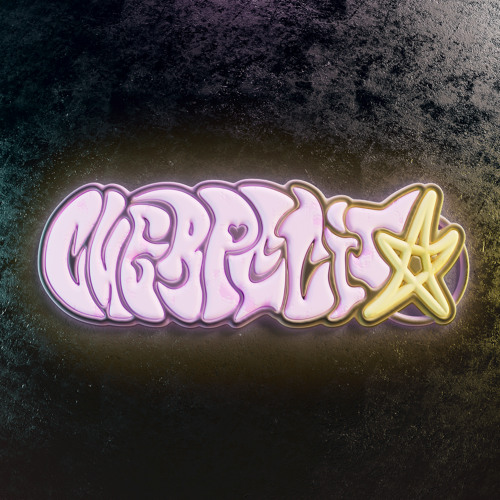

Cuerpecito
Jhay-Cortez
Jhay Cortez

INFORMACIÓN
Jesús Manuel Nieves Cortés conocido artísticamente como Jhayco, es un cantante, compositor y productor musical puertorriqueño. Wikipedia Nacimiento: 9 de abril de 1993 (edad 30 años), Río Piedras Socios de composición: Bad Bunny, Anuel AA, Mora, J Balvin, MÁS Sello discográfico: Universal Music Latin Entertainment Géneros: Urbano latino, Hip-hop/rap Nominaciones: Premio Grammy al Álbum del Año, MÁS